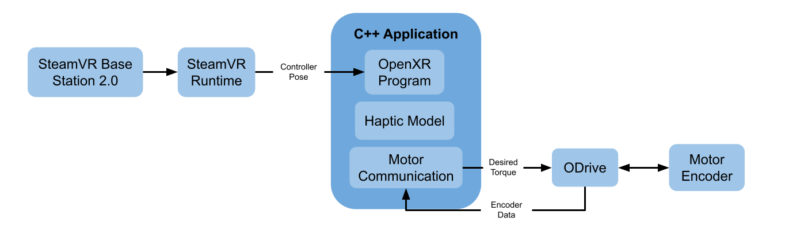

Virtual Reality Haptics
Created a haptic feedback system for the Valve Index

Overview
This project is an exploration of force/torque feedback in human-robotic systems. VR prides itself on creating immersive environments. However, in current systems the immersion is only an audio-visual experience. Adding the sense of touch to VR systems can enable many more applications such as telerobotic surgery and something else. VR haptic gloves are the first expansion into the tactile domain. These gloves can resist finger motion. This project is concerned with resisting hand and arm motion.
Initial Design
In this project, we worked backwards from the end goal. Our goal was to deliver force/torque feedback to user's arm. We began by thinking about mechanical systems to could produce significant force/torques on the user's arms. Our plan was to use motor(s) to generate torque and use a linkage system to convert the torque into a force or torque felt on the user's hand. The best way to visualize this is by imagining a robotic arm in which the user is holding the end effector. Actuating the motors in the robotic arm, will extert torques/forces on the user's hand. If this robotic arm is stationary in the room, the VR experience is confined to the arm's workspace. If the robotic arm is attached to the user, the VR experience if fully mobile. There are two main complications to this design. The user must carry the weight of the robot, and the user's body must disperse the reaction forces (the base of the robot will exert forces on the user). From a software and controls standpoint, the primary constraint is the VR tracking frequency. The maximum stiffness of a haptically rendered surface is proportional to the speed of the controller. The Valve Index 2, comes with a state of the art tracking system, lighthouse 2. This tracking system provides data at 144 Hz. The following is the primary question I researched during this project. Given this bottleneck frequency, what surfaces can we haptically render? The answer to this question is based in both engineering and human psychology.
Materials
Hardware Selection
For this project, I am using a Valve Index 2 with the Vive Lighthouse 2.0 tracking system. I chose this setup because the Lighthouse 2.0 provides the fastest tracking on the market. The other primary components I needed are motors, encoders, and a motor driver. I decided to use the T-motor GL60 Kv25. I chose this motor for the following reasons. It has a Kv of 25 rpm/V so it can deliver high torque. It has a has 14 pole pairs, so rotation will be smooth. This is necessary to create compelling haptics. It has a stall current of 4.2 A. This will prevent the motor from overheating quickly. It weighs 230g which is reasonable for the heaviest component of the wearable device. For the motor driver, I decided to use the ODrive. This motor driver is open-source, so it can be modified if needed. Also, the ODrive implements field oriented control to smoothly control the motor and create compelling haptics. The encoder I chose is the AS5048A. This encoder has 14-bit resolution and is supported by the ODrive.
Software Selection
It was difficult to select the software to use for this project. Robots run on Linux whereas VR runs on Windows. Since this project, is at the intersection of robotics and VR it was difficult to decide which one to use. I settled on using Linux for the following reasons. This project is primarily a robotic technology exploration not a VR technology exploration. The robotics side of this project will be easier to build upon in the future if this foundation is built Linux. Once the technology is no longer experimental, it can be ported Windows. The downside to using Linux, is that it is difficult to interact with the VR hardware. Currently popular game engines, Unity and Unreal Engine, do not support VR development in Linux. I decided to use the OpenXR API directly to interact with the hardware. I stripped down an OpenXR example render pipeline for my own use. This project focuses on the sense of touch, so for now I am not rendering to the VR headset. I am only using the VR setup and render pipeline to access the controller tracking data.
Pipeline
Figure 1. General software architecture. The C++ application inputs the controller pose and encoder data. The haptic model determines the torque that should be applied to the motor. The desired torque is sent to the ODrive. The ODrive directly controls the motor.
VR Input
The Lighthouse 2.0 samples controller and headset data at 144Hz.
The SteamVR runtime converts the data from the Lighthouse into meaningful information.
The OpenXR program collects both controller poses as well as the headset pose, but I am only using a single controller pose.
Note on SteamVR Runtime: This is currently the only runtime that can interact with the Lighthouse 2.0.
SteamVR is closed source, and their developement practices (specifically for Linux) are questionable.
For this project, I am using SteamVR version 1.15.12. Also, I disabled SteamVR from connecting to the internet.
This is the only way to prevent auto updates.
I recommend using Monado, an open-source runtime, when Lighthouse 2.0 is supported.
C++ Application
OpenXR Program
This part of my application was derived from the hello_xr OpenXR example.
I simplified this code to only the portions needed for this project.
I also added functionality to query the state of the program and retreive necessary information such as controller pose.
Haptic Model
The haptic model uses the controller pose and encoder data to calculate the torque that should be applied to the motor.
The code is structured to make the haptic model easily modifiable.
This allows developers to easily experiment when attempting to render various surfaces and textures.
Motor Communication
The ODrive comes with a Python-based CLI that serially communicates with the motor driver.
Since my application requires C++ for OpenXR, I implemented a motor communication library in C++ enabling direct communication with the ODrive.
Motor Control
After the C++ application sends a desired torque to the ODrive, the ODrive's control algorithms should handle the direct motor control. However, I had to modify the hardware and software on the ODrive to enable the torque control mode. The ODrive firmware classifies motors into two categories, high current motors and low current motors. The T-Motor GL60 Kv25 is classified as a low current motor. The ODrive does not implement torque control for low current motors because it can overheat the ODrive and/or the motor. To work around this, I replaced the standard shunt resistors on the ODrive with 0.02Ω resistors. I also modified the shunt resistance value in the firmware to reflect this change.
1 Degree of Freedom
Since this project is novel in the domain of VR haptics, I started with a single degree of freedom system.
There were two goals during this stage of the project. The first was to implement the software pipeline previous mentioned.
The second goal was to assess the ability to haptically render surfaces using encoder data and using VR tracking data.
The plan was to haptically render a wall using the model of a spring. Hooke's Law states: $$F_s = -kx$$
\(F_s\) is the spring force [N]
k is the spring constant [N/m]
x is the displacement [m]
My system only produces torque, so I modified the equation.
$$T_m = -kθ$$
\(T_m\) is the motor torque [Nm]
k is the spring constant [\(\frac{Nm}{degrees}\)]
\(θ\) is the displacement [degrees]
Encoder Feedback
The C++ application received encoder data at a frequency of 490 Hz. Using only the encoder feedback I was able to render walls up to a stiffness of ... before instability occurred
Tracking Feedback
The C++ application received VR controller pose data at a frequency of 144 Hz. Using only the pose data, I was able to render walls up to a stiffness of ... before instability occurred
2 Degrees of Freedom
The 1 degree of freedom system confirmed that compelling haptics are feasible given the bottleneck frequency of 144 Hz.
The next step was to incorporate more freedom of movement.
I put the 1 degree of freedom system on a vertical slider to make a 2 degree of freedom system.
Haptics in the 2 degree of freedom system cannot be done with just the encoder.
The VR tracking data is necessary to determine the position of the controller.
The VR tracking data or the encoder data could be used to determine the angle of the controller.
In this system, I decided to haptically render a floor.
You can imagine the VR controller as a sword (extending past the top of the physical controller), and the sword tip (cursor) is interacting with the floor.
As the cursor touches the floor, the motor delivers a torque to the user that attempts to prevent the sword from penetrating the floor.
I used the following equation to model the floor:
$$T_m = -kx$$
\(T_m\) is the motor torque [Nm]
k is the spring constant [\(\frac{N}{m}\)]
x is the depth of the cursor into the floor squared [\(m^2\)]
This equation allowed me to express the spring constant in traditional units.
Filtering
Due to the noise in the tracking data, I decided to filter the controller pose.
I used the following exponential smoothing function to lowpass filter the controller position:
$$s_0 = x_0$$
$$s_n = αx_n+(1-α)s_{n-1}$$
s is the filtered output
x is the unfiltered input
\(α\) is the smoothing factor
I experimentally and qualitatively determined \(α=0.5\) to be the optimal smoothing factor.
Audio pipeline
4 Degrees of Freedom
Linkage
Transforms
Next Steps
Concurrency
4 Bar Linkage